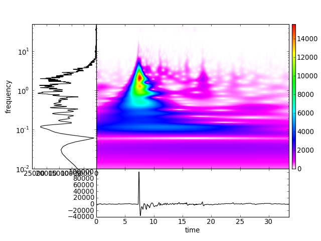

Plot time-frequency representation, spectrum and time series of the signal.
| Parameters: |
|
|---|---|
| Returns: | If show is False, returns a maplotlib.pyplot.figure object (single component data) or a list of figure objects (multi component data) |
Example
>>> from obspy import read
>>> tr = read("http://examples.obspy.org/a02i.2008.240.mseed")[0]
>>> plotTfr(tr.data, dt=tr.stats.delta, fmin=.01,
... fmax=50., w0=8., nf=512, fft_zero_pad_fac=4)
